六百六十萬人走過這裡
這條路走到一半就斷了
跟著一組客人，從停車到離開，三十四分鐘
不問問題、不打擾、只記錄。這是唯一不會被客套話污染的資料。
樣本是 8/8 單日、完整跟隨一組，加上跨組目視。它指方向，不是統計。
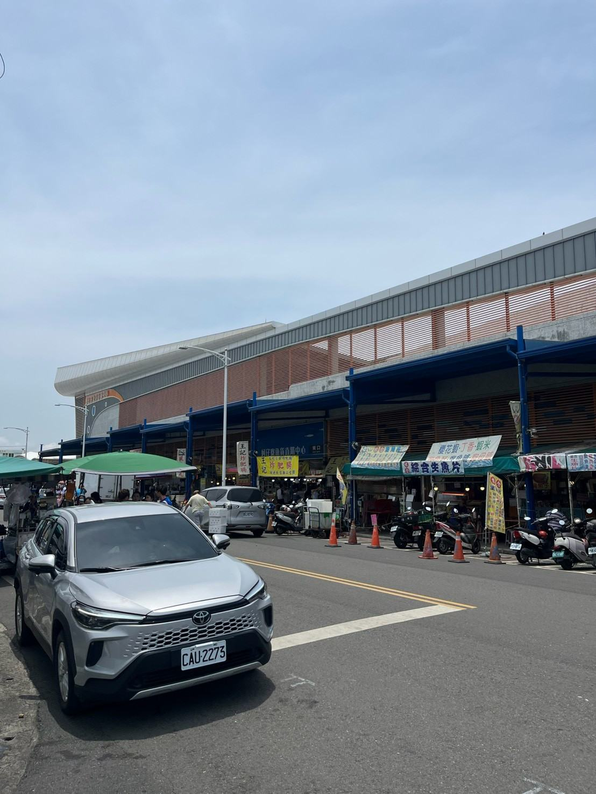
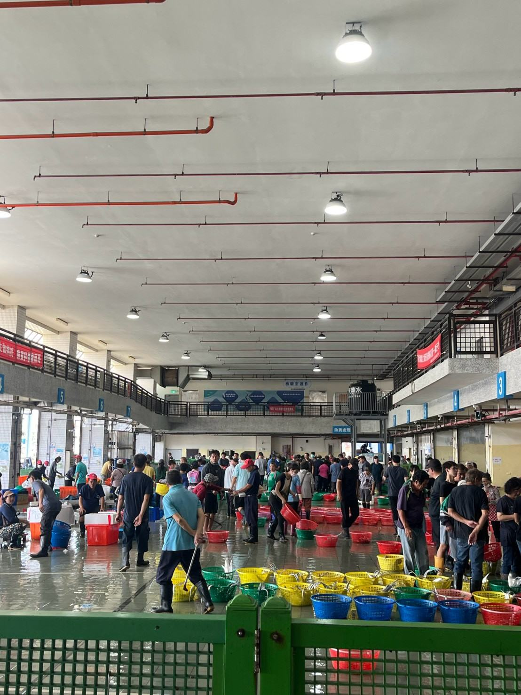
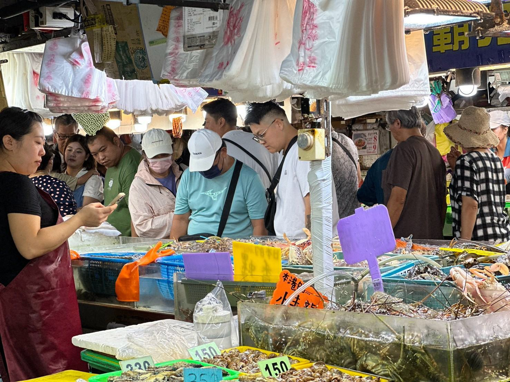
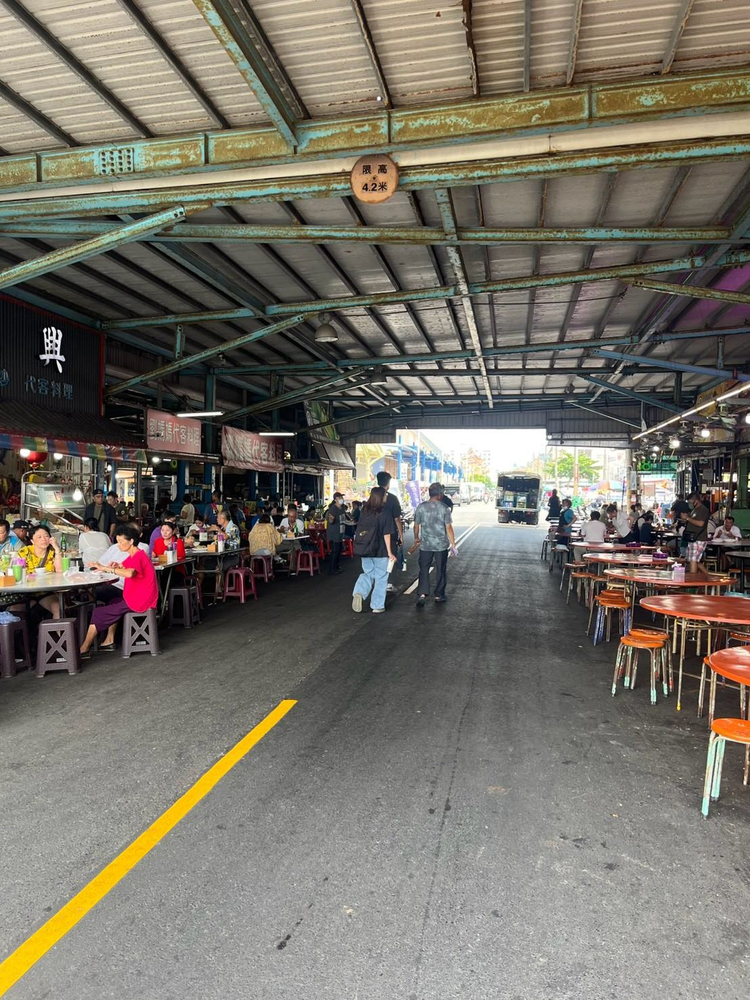
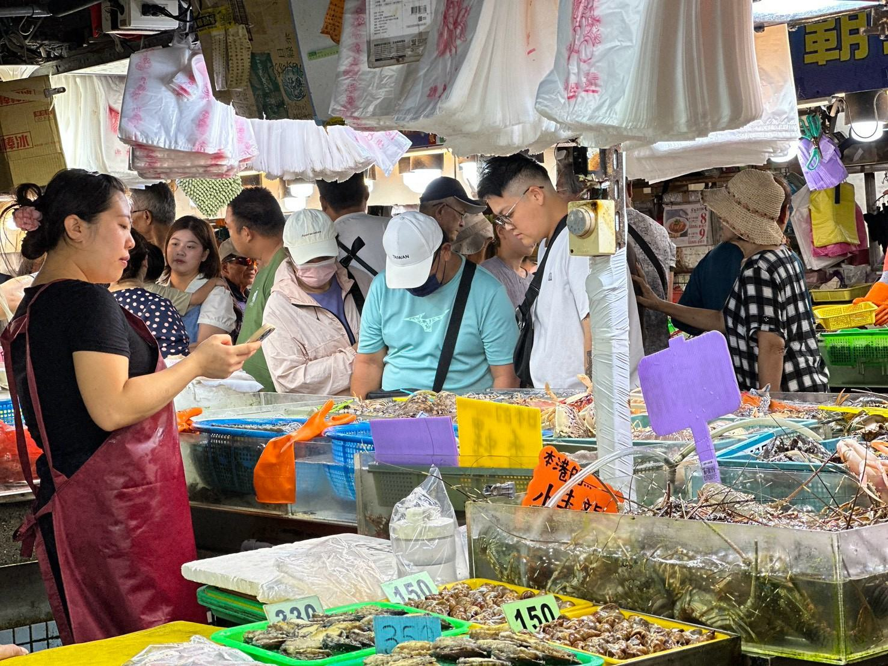
停留不算短。短的是他換到的東西
不算趕時間
佔全程六成
他是願意買的
他不是趕時間，是卡在決定。願意花二十分鐘決定買哪一攤的人，缺的不是更快的流程，是幫他決定的東西。
以上三個數字來自 8/8 完整跟隨的那一組。
當天看到四種走法，每一種都只走一段
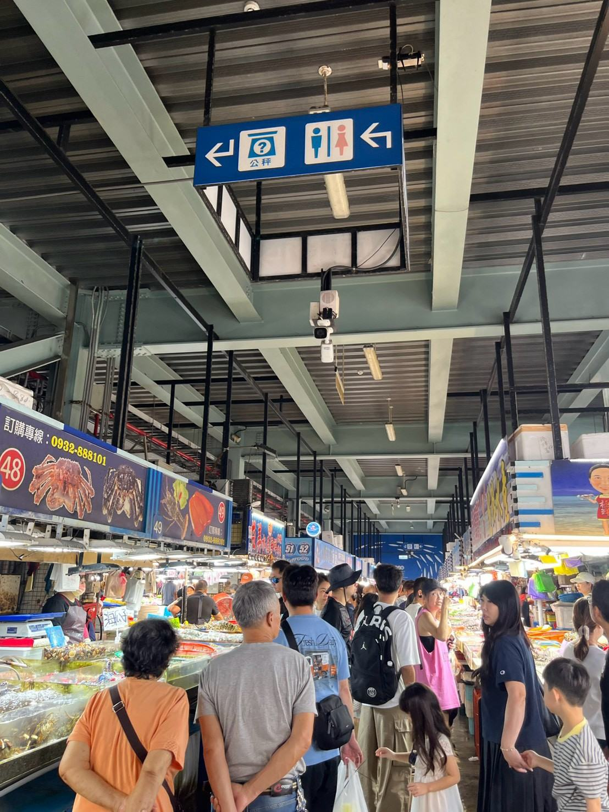
我們沒有看到有人把它們串起來。因為沒有一段告訴他還有下一段。
完整跟到的那一組
沒有走完全程
三十四分鐘
最後一站的次數
其餘是目視，不是計數。看到的多數人停留一段時間就離開。
走完全程的比例我們沒有數據，只能說偏少。
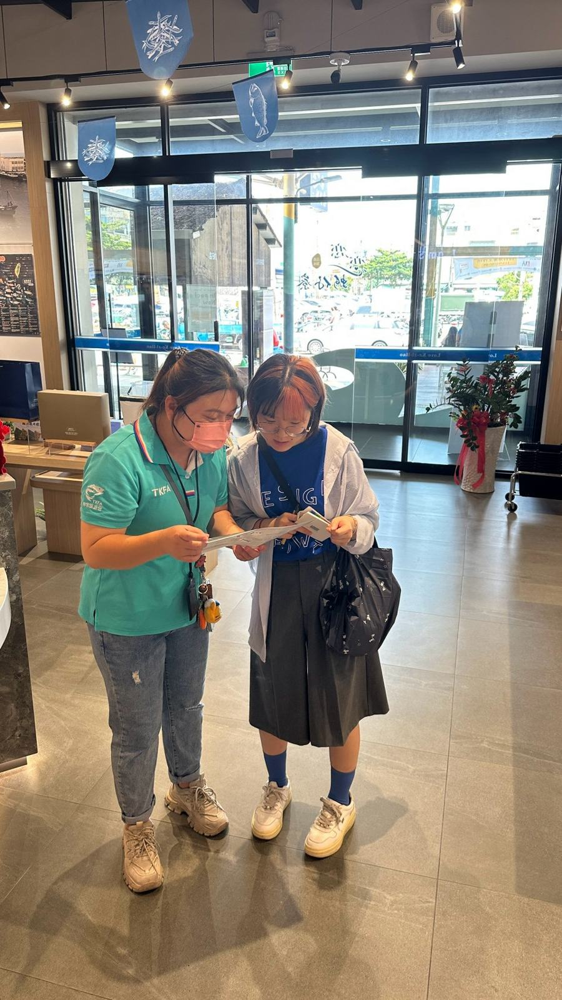
不是不想走，是每一段都有東西把他擋回去
每一段卡住的原因都不一樣，但共同點是同一件事：沒有人在那個當下告訴他還有下一段。
這條路橫跨三個部門，沒有人是它的主人
三個部門各自都把自己那一段做得不錯。沒有做的是中間的交接，因為那一段不屬於任何一個部門的職責。
缺的不是服務。是順序。
下面每一項都已經存在，而且做得不錯。它們只是沒有出現在客人走的那條路上。
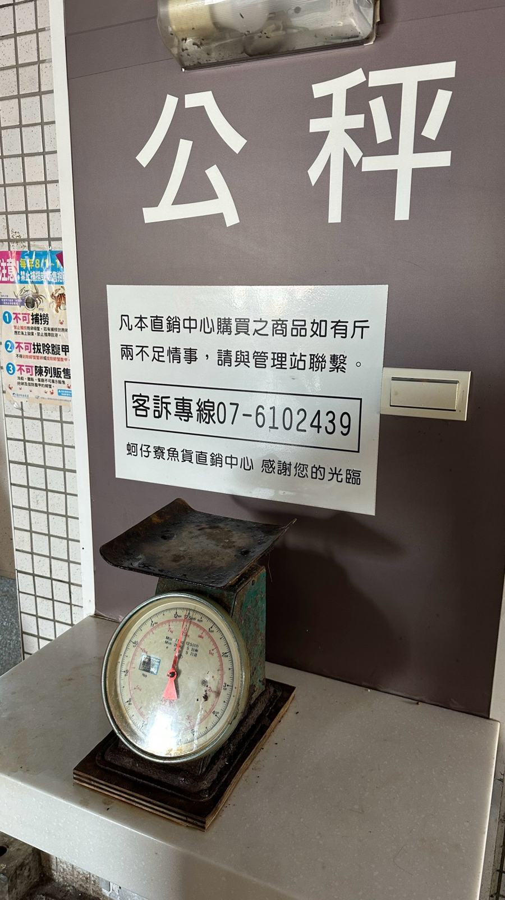
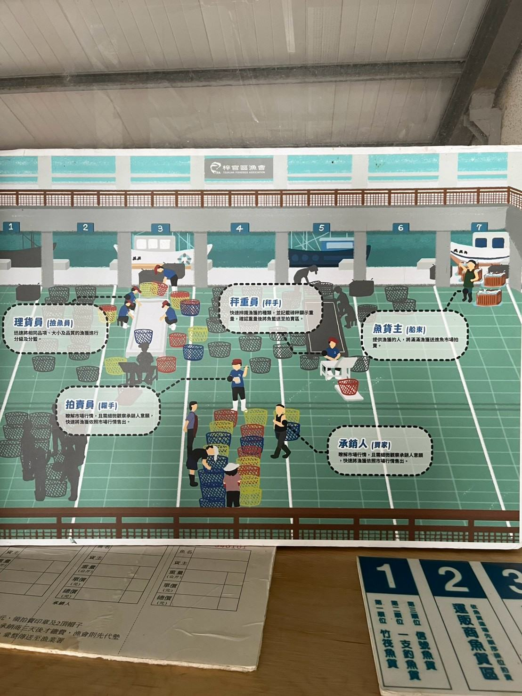
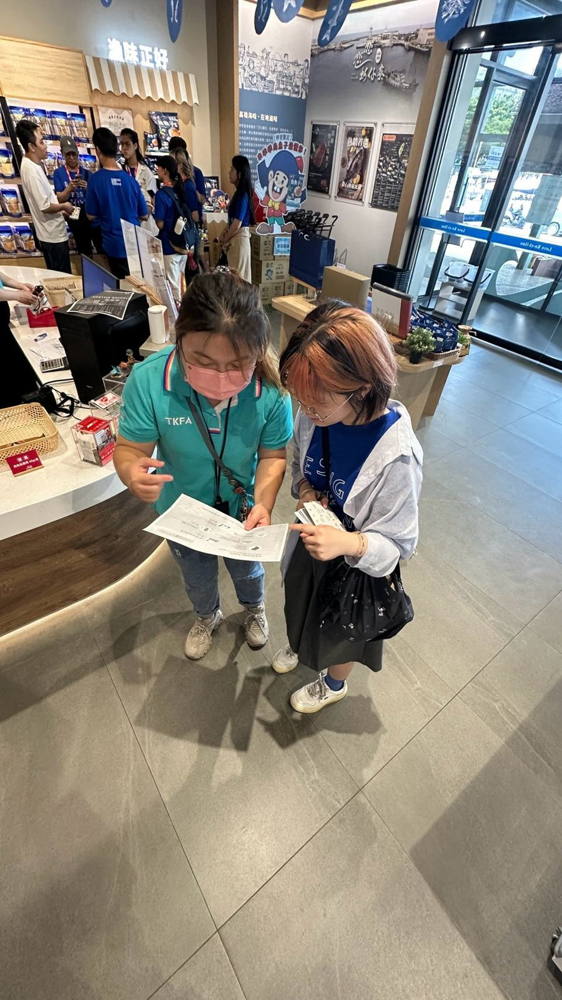
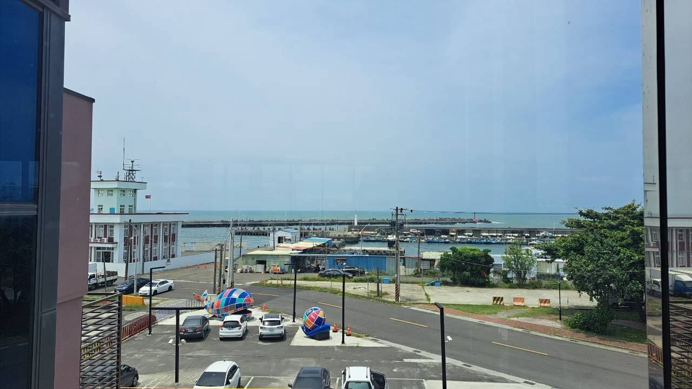
凡是這裡的人自己發起的，都做成了
全台漁港第二
產值逾五億
的年銷量
紅點、iF、Good Design、OTOP
發不出薪水
大會提案
直銷中心落成
信用部重開
烏魚子進好市多
全台第二
不是問他們有沒有想過轉型，是問當年怎麼做到的。缺的那一格不是能力。
一個已經是全台第二，另一個還沒開始
到店的人不知道有線上，線上的人不知道現場長什麼樣。把這兩邊接起來的東西，就是那份名單。
他們早就蓋過一個遊客服務中心。現在裡面堆雜貨。
就在拍賣場旁邊，標示還在，門也開著。裡面堆的是他們的貨，沒有人在做那件事。
這是設計原則 06 最強的證據。如果我們的解法需要有人顧，它最後也會進那個房間。
留存每動一個百分點，效果比再蓋一棟大
| 情境 | 來訪後留下聯絡方式 | 年回購金額 | 要做什麼 |
|---|---|---|---|
| 現在 | 已有 4,180 位好友 | 未取得 | 名單存在，但我們沒有拿到它跟到訪的對應資料 |
| 保守 | 1% 6.6 萬人 | 約 1,300 萬 | 結帳時給一個掃碼的理由 |
| 中性 | 3% 19.8 萬人 | 約 8,900 萬 | 加上寄冰與宅配的引導 |
| 積極 | 5% 33 萬人 | 約 2.6 億 | 會員制與二樓的停留體驗 |
推估基礎：660 萬人次 × 客單價 1,000 元。對照組：冷鏈展售中心 1,800 萬。
三條收入線，只有一條還長得動
| 收入線 | 現在 | 還能不能長 |
|---|---|---|
| 拍賣抽佣 | 魚市場年交易 4,000 噸 | 穩定，但抽佣比率有法定天花板，不是漁會自己能決定 |
| 自有品牌與通路 | 戀戀蚵仔寮、線上漁港、好市多 | 能長。冷鏈、認證、電商都已經蓋好了 |
| 信用部 | 2015 重開，開戶 3,000 人 | 受金融監理，成長路徑跟觀光無關 |
不靠投放
沒有回訪資料，算不出來
成長只能來自第二條，而第二條完全取決於那六百六十萬人裡有多少人還聯絡得到。
在漁港這一塊已經第二，真正的對手不在漁港
蚵仔寮是第三名的 2.7 倍。再從別的漁港搶人，能搶到的空間很小。
一個高雄家庭的週末：大賣場、百貨、露營、待在家。而留存這件事，沒有任何一個漁港做得好，那是空的不是紅海。
從看到的一件事，走到問題本身
POV 裡面不准出現解決方案。
我們可以如何幫助梓官區漁會，在遊客第一次前來、現場資訊分散、又不容易主動查到的情況下， 讓他不必多花力氣就拿到該有的資訊，把旅遊體驗與長期消費價值一起拉起來？
刻意沒有出現任何解法。先定義要解什麼，解法才有得選。
三件事可以直接搬，其中一件是反面教材
七條原則，任何解法都要先過
每一條都指得回現場看到的東西，不是憑感覺訂的。
原則不是理想，是否決權。二十個構想被砍到剩四條。電子看板、到府冷鏈、輪值引導員、區域推播都死在這裡，多數是因為要加人力。
把三段接成一條路，LINE 當那條線
為什麼是 LINE：帳號與四千一百八十位好友已經存在，只是沒有被用在這條路上。
我們自己訂的數字：每個人多踩 1.5 個點
現在是買完魚貨就走，或買完去代客料理就走。沒有人走完全程。
不是隨手抓的數字。多數人現在只走兩段，這是加一段，再加上會多走的那一部分人。小到一個假日就量得出有沒有動。
沒有新增任何一個系統，只是把已經有的接起來
左邊六樣全部是他們本來就有的。我們沒有做第十二個入口，只做了中間那一層，把散在六個地方的東西變成一條回答得出來的路。
現在拿手機掃，一分鐘就能自己試
今天有什麼
或打字問它。
正式帳號要開在漁會名下。
五格丟關鍵字給小幫手，一格直接連到漁會自己的線上商店，想買的人不必再多講一句話。選單本身不計費。
問「停哪裡」，拿到的是三個可以按的地圖
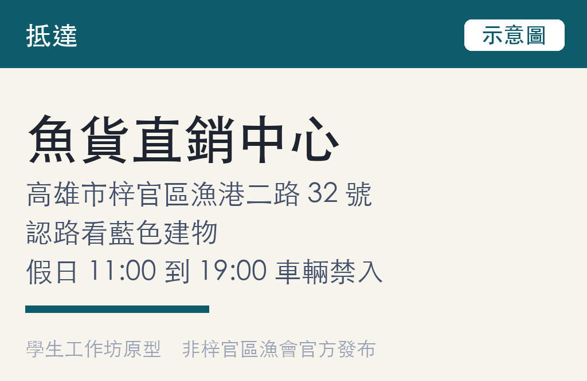

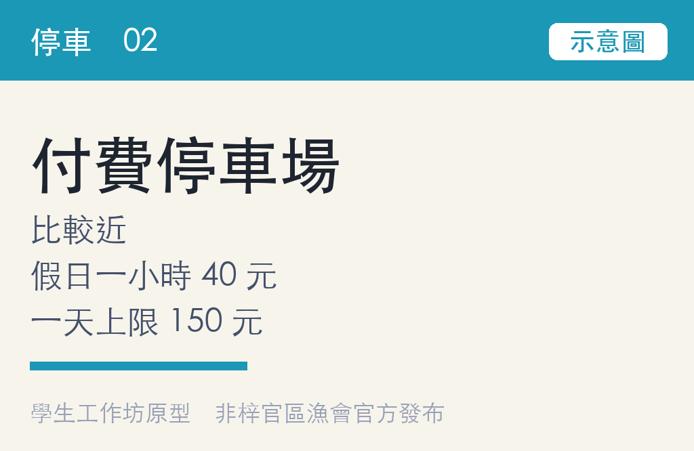
一則純文字連結，跟一整組帶圖帶按鈕的卡片，扣掉的訊息額度一模一樣。所以我們一律用多頁訊息。
一張圖回答「我到底該怎麼走」
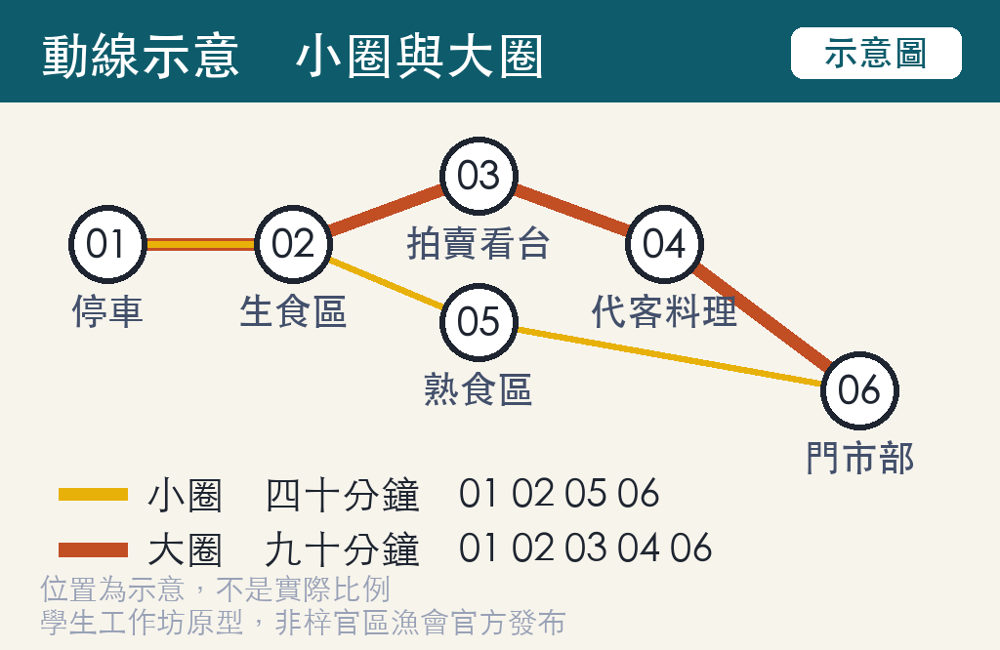
編號 01 到 06 是全套通用的：小幫手的回覆、集章站點、後台操作單都用同一組號碼。不會有兩套。
把原本要找三層的東西，變成一顆按鈕
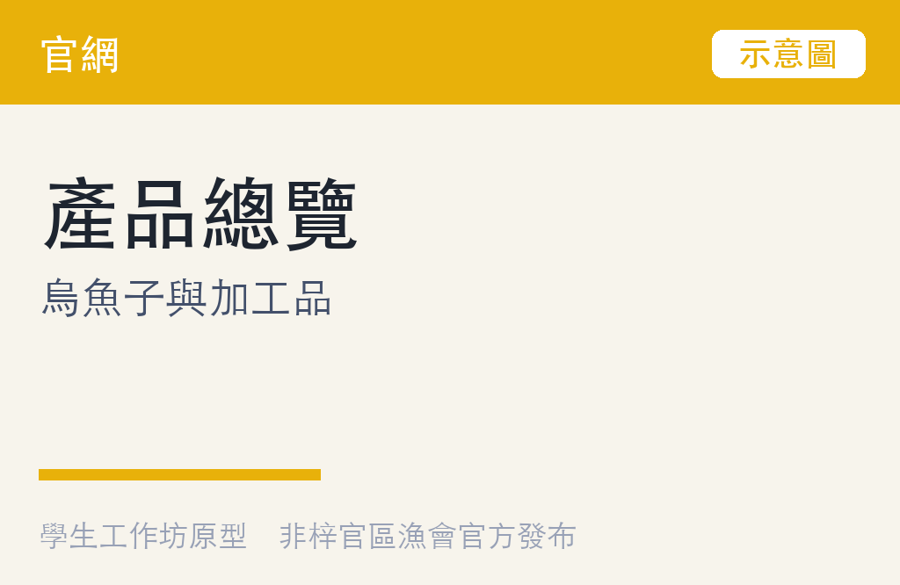

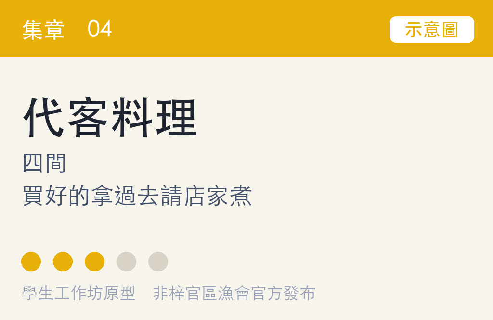
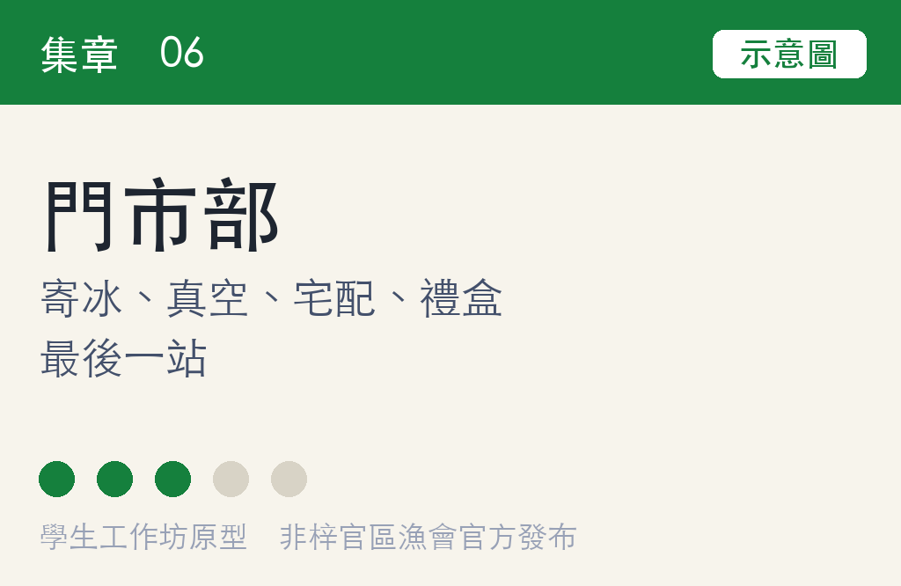
六組多頁訊息，二十四張卡。每一張都有下一步可以按。
它會講明自己是 AI，也留了一條走得到真人的路
它不會說的六句話
這六條寫在程式裡，不是寫在提示詞裡。每次修改都會自動重跑一次檢查。
不是模擬畫面，是真的用手機打開來問
04_產出/oa_img/demo.mp4重新整理就會自動播放
錄影裡會看到的四件事
帳號 @743wkhym 是測試帳號，掛在我們名下。正式帳號要開在漁會名下，金鑰由他們保管。
不設及格分數，看的是有沒有比對照組好
沒有同類漁港的公開基準可以對。訂一個絕對數字只會變成自我安慰。所以我們同時量沒用過的人，兩邊比。
| 層 | 看什麼 | 多快看得到 |
|---|---|---|
| 當天 | 有多少人真的用了入口、問到答案要來回幾次、哪幾個問題最常被問 | 當天 |
| 一個假日 | 用過的人走到下一段的比例，跟沒用過的人比 | 一天 |
| 一個月 | 門市部單據筆數跟平常同時段比、七天內回訪比例、封鎖率 | 四週 |
什麼情況我們會建議停：沒有人用那個入口、客人挑東西的時間沒有變短、或者漁會每天要花超過五分鐘維護。三者任一成立，我們把觀察整理好交還，不留東西在你們名下。
我們需要的不是預算，是一個人
這一版零元起步
不動硬體與動線
要加人力的設計已先砍掉
正式帳號開在漁會名下

六百六十萬人已經來了
現在缺的是有人告訴他下一步
指定一個人負責這一整段，其餘的今天就能開始。